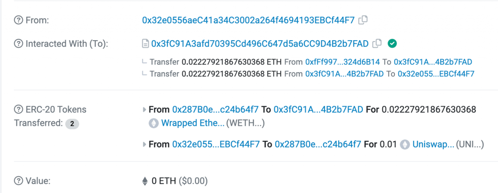
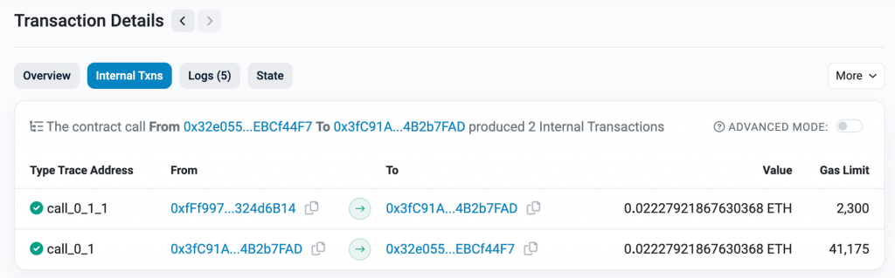
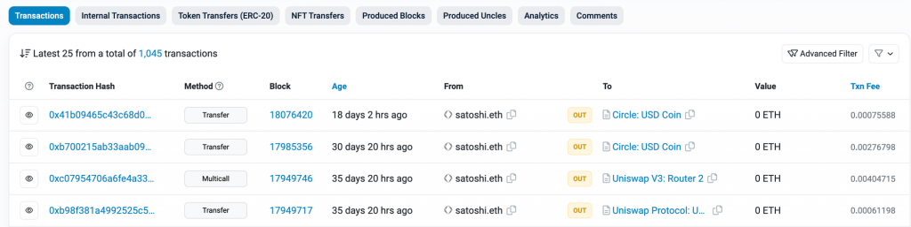
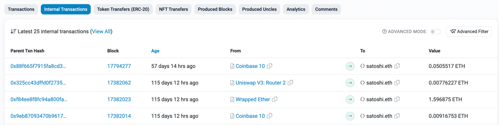
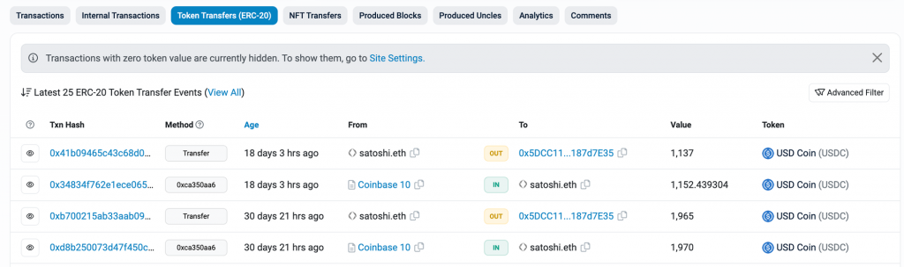
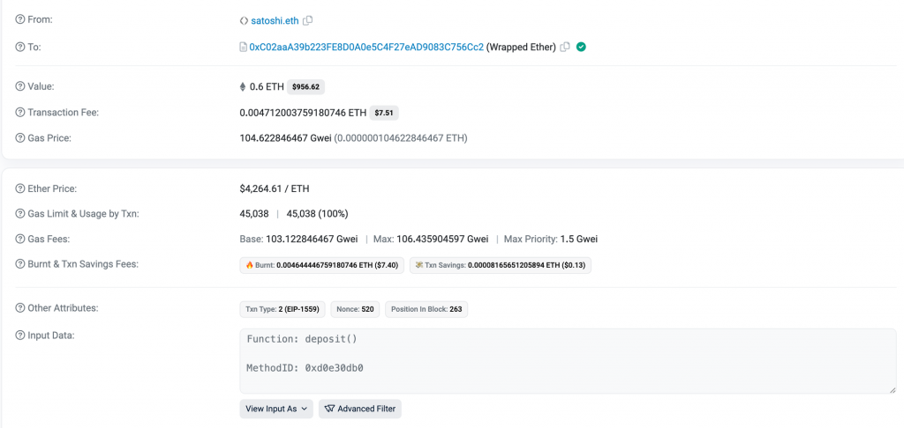
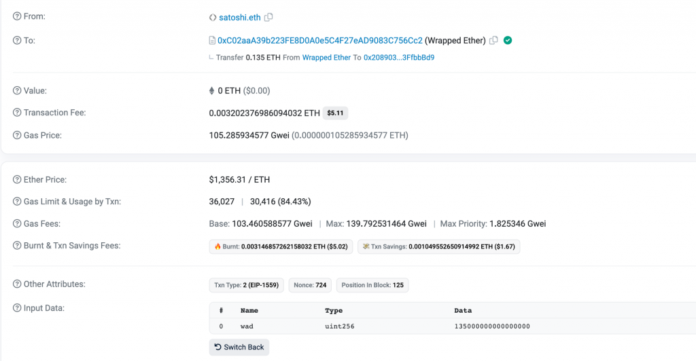
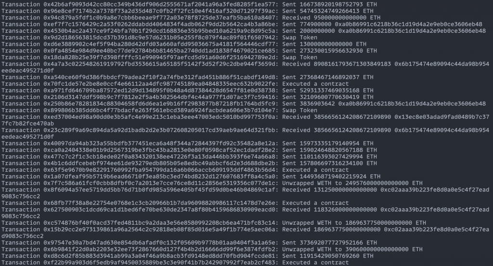
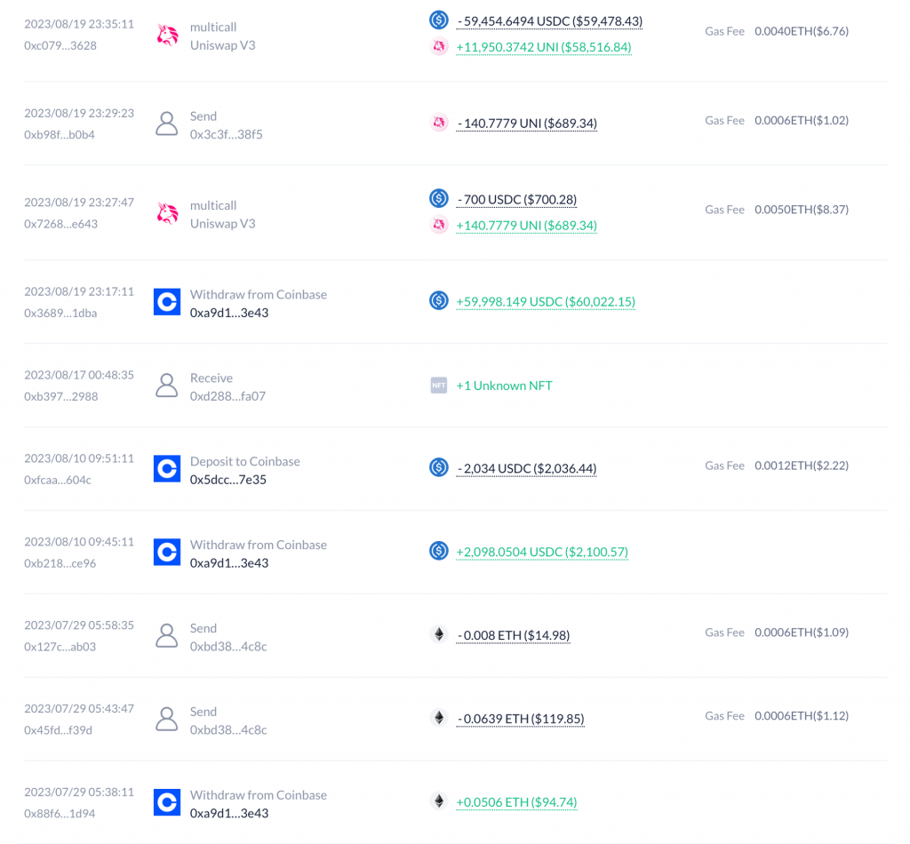

用戶在以太坊上可以進行各式各樣類型的交易，像是發送 ETH, Transfer Token, Swap, 合約互動, 買賣 NFT 等等，但原始的區塊鏈資料並沒有直接定義這些交易類型，導致有時用戶很難理解一筆交易實際上發生了什麼事情。為了提高區塊鏈資料的可讀性，今天我們會介紹如何整理以太坊上的交易歷史資料，並區分出不同類型的交易，包含 Send, Receive, Swap, Wrap, Unwrap 等等，作為 Web3 與進階後端主題的收尾。
為了整理出完整的交易歷史資料，還有一個以太坊交易中的概念之前沒有提過，也就是 internal transaction。舉個實際的交易作為例子：https://sepolia.etherscan.io/tx/0xcc07567295055673a1b7cc909976a154f183fd5c0707b8dab9b900887af556b9

這是我在 Sepolia 上把 UNI Token 轉換成 ETH 的交易，可以看到在 Interacted With 中有個把 ETH 轉移給我的紀錄，而這個紀錄的詳細資訊會顯示在 Internal Txns Tab 中：

到這裡就能比較清楚 internal transaction 的作用了，他其實就是在智能合約執行時由該合約觸發的交易。當一個智能合約與其他合約或地址互動時（例如轉移 ETH 或呼叫其他合約的函數），這些呼叫都會被紀錄在 internal transactions 中。
與 Internal Transaction 相對應的概念就是 External Transaction，他指的是直接由外部帳戶（也稱為 Externally Owned Account, EOA）發起並發送到以太坊網路的交易。這些交易可以是轉移 ETH 到另一個地址，或者是呼叫一個智能合約。
因此可以看到 Etherscan 上針對一個地址顯示的交易歷史中，第一個 Transactions Tab 就是顯示這個地址相關的 External Transactions，第二第三個 Tab 則分別是 Internal Transactions 與 ERC-20 Token Transfer，下圖為範例地址 satoshi.eth 的呈現：



可以看到這三個 Tab 中有一些 Transaction Hash 是一樣的，因為一筆 External Transaction 中可以同時觸發多筆 Internal Transaction 跟多筆 ERC-20 Token Transfer，因此接下來就需要按照 Tx Hash 去整理交易歷史。另外今天只會先處理 ERC-20 Token 的轉移紀錄，因此會先忽略 ERC-721 與 ERC-1155 NFT 的相關紀錄。
由於我們需要取得一個地址過往的所有 Internal Transactions 列表才能組出完整的交易歷史，Alchemy 目前沒有提供這個 API，因此今天的實作會使用 Etherscan API，讀者可以先到官網註冊一個帳號，並到 API Key 頁面建立免費的 Key。
Etherscan 提供了方便的 API 可以直接取得一個地址的所有 External Tx,
Internal Tx 以及 ERC-20 Token Transfer（相關文件），別人也已經寫好
etherscan-api
package 方便我們呼叫這幾個 API。從這三個 API 取得資料後就可以按照 Tx
Hash 把相關的紀錄歸類在一起，方便後續的處理。以下程式碼就定義了
CombinedTransaction 結構代表一筆交易相關的紀錄，並將三個
Etherscan API 的資料整理成 map[string]*CombinedTransaction
結構：
[code] import ( “github.com/nanmu42/etherscan-api” )
const targetAddress = "0x2089035369B33403DdcaBa6258c34e0B3FfbbBd9"
type CombinedTransaction struct {
Hash string
ExternalTx *etherscan.NormalTx
InternalTxs []etherscan.InternalTx
ERC20Transfers []etherscan.ERC20Transfer
}
func main() {
client := etherscan.New(etherscan.Mainnet, os.Getenv("ETHERSCAN_API_KEY"))
// Get all transactions
externalTxs, err := client.NormalTxByAddress(targetAddress, nil, nil, 1, 0, true)
if err != nil {
log.Fatalf("Failed to retrieve transactions: %v", err)
}
internalTxs, err := client.InternalTxByAddress(targetAddress, nil, nil, 1, 0, true)
if err != nil {
log.Fatalf("Failed to retrieve transactions: %v", err)
}
addr := targetAddress
erc20TokenTxs, err := client.ERC20Transfers(nil, &addr, nil, nil, 1, 0, true)
if err != nil {
log.Fatalf("Failed to retrieve ERC20 transfers: %v", err)
}
// Use a map to combine transactions by their hash
transactionsByHash := make(map[string]*CombinedTransaction)
for i, tx := range externalTxs {
transactionsByHash[tx.Hash] = &CombinedTransaction{
Hash: tx.Hash,
// avoid pointer to loop variable
ExternalTx: &externalTxs[i],
}
}
for _, tx := range internalTxs {
if combined, exists := transactionsByHash[tx.Hash]; exists {
combined.InternalTxs = append(combined.InternalTxs, tx)
} else {
transactionsByHash[tx.Hash] = &CombinedTransaction{
Hash: tx.Hash,
InternalTxs: []etherscan.InternalTx{tx},
}
}
}
for _, tx := range erc20TokenTxs {
if combined, exists := transactionsByHash[tx.Hash]; exists {
combined.ERC20Transfers = append(combined.ERC20Transfers, tx)
} else {
transactionsByHash[tx.Hash] = &CombinedTransaction{
Hash: tx.Hash,
ERC20Transfers: []etherscan.ERC20Transfer{tx},
}
}
}
}[/code]
需要特別注意的是，一筆 CombinedTransaction 中可以沒有
ExternalTx，例如有一筆交易是 A 轉了 10 USDC 給
B，這筆交易就會是 A 的 External Tx 而不會是 B 的，因此在計算 B
的交易歷史時的這筆 CombinedTransaction 就只會有一筆
etherscan.ERC20Transfer
資料。接下來就可以判斷一筆交易的類型了。
基於現有的 CombinedTransaction
資料可以判斷出幾種交易類型，包含：
對用戶來說發送 ETH 或發送 ERC-20 Token 都算是送出資產的一種，只是背後的資料來源不同，因此要整理出這筆交易有哪些資產餘額的變化，把 ETH 跟 ERC-20 Token 一起看待。至於 Swap 則是判斷這筆交易是否包含了送出一筆資產與得到一筆資產。其他類型的交易就暫時當作是 Contract Execution。
可以先實作出 GetTokenChanges()
來回傳這筆交易中有哪些資產餘額的變化，程式碼如下：
[code] func (c CombinedTransaction) GetTokenChanges() map[string]big.Int { // Calculate token balance changes tokenChanges := make(map[string]*big.Int)
// External ETH transaction
if c.ExternalTx != nil {
value := new(big.Int)
value.SetString(c.ExternalTx.Value.Int().String(), 10)
tokenChanges["ETH"] = value.Neg(value)
} else {
tokenChanges["ETH"] = big.NewInt(0)
}
// Internal ETH transaction
for _, intTx := range c.InternalTxs {
value := new(big.Int)
value.SetString(intTx.Value.Int().String(), 10)
if strings.EqualFold(intTx.From, targetAddress) {
tokenChanges["ETH"].Sub(tokenChanges["ETH"], value)
} else {
tokenChanges["ETH"].Add(tokenChanges["ETH"], value)
}
}
// ERC20 token transfer
for _, erc20 := range c.ERC20Transfers {
value := new(big.Int)
value.SetString(erc20.Value.Int().String(), 10)
if strings.EqualFold(erc20.From, targetAddress) {
if _, exists := tokenChanges[erc20.ContractAddress]; !exists {
tokenChanges[erc20.ContractAddress] = new(big.Int)
}
tokenChanges[erc20.ContractAddress].Sub(tokenChanges[erc20.ContractAddress], value)
} else {
if _, exists := tokenChanges[erc20.ContractAddress]; !exists {
tokenChanges[erc20.ContractAddress] = new(big.Int)
}
tokenChanges[erc20.ContractAddress].Add(tokenChanges[erc20.ContractAddress], value)
}
}
// Remove zero balances
for token, balance := range tokenChanges {
if balance.Int64() == 0 {
delete(tokenChanges, token)
}
}
return tokenChanges
}[/code]
裡面針對 External Tx, Internal Tx, ERC-20 Transfer 各自有不同的處理邏輯。External Tx 中會有該地址發出的 ETH 數量，而 Internal Tx 可能是發送或接收 ETH，ERC-20 Transfer 則是發送或接收 Token，也要根據 From 是否等於該地址來決定是要增加還是減少 Token 餘額。
有了 GetTokenChanges() 後，就能基於他的結果來實作
Type() 以判斷出 Swap, Send, Receive, Contract Execution
這幾種類型：
[code] type TransactionType string const ( Send TransactionType = “Send” Receive TransactionType = “Receive” Swap TransactionType = “Swap” ContractExecution TransactionType = “ContractExecution” )
func (c *CombinedTransaction) Type() TransactionType {
tokenChanges := c.GetTokenChanges()
if len(tokenChanges) > 1 {
// Check Swap: 2 tokens, 1 positive, 1 negative
if len(tokenChanges) == 2 {
sign := 1
for _, balanceChange := range tokenChanges {
sign *= balanceChange.Sign()
}
if sign < 0 {
return Swap
}
}
return ContractExecution
}
// Check it's a Send or Receive
for _, balanceChange := range tokenChanges {
if balanceChange.Sign() < 0 {
return Send
} else if balanceChange.Sign() > 0 {
return Receive
}
}
return ContractExecution
}[/code]
到這裡就能判斷出幾個基本的交易類型了。但其實還有兩種交易我們沒有考慮到，也就是 Wrap 跟 Unwrap。
在前面一些交易紀錄中，讀者可能會看到 Wrapped ETH 這個 ERC-20 Token，他跟 ETH 是怎樣的關係呢？其實 Wrapped ETH (WETH) 就是 ETH 的 ERC-20 版本。由於 ETH 本身是以太坊的原生代幣，不符合 ERC-20 標準，因此有時在智能合約中想要以 ERC-20 介面來操作 Token Contract 時，會產生 ETH 無法與之兼容的問題。
Wrapped ETH 就是為了解決這個問題而被創造出來的 ERC-20 合約，作為一種可以代表 ETH 並且完全符合 ERC-20 標準的 Token。當我想從 ETH 換成 WETH 時，其實是把 ETH 打進 WETH 的智能合約中，他就會幫我的 WETH 餘額增加對應的數量，這個過程被稱為 Wrap。範例的 Wrap 交易可以看這筆：https://etherscan.io/tx/0x48a878f061909863ad85d90d2a310d552922bb5eccd80446f1714afcc35093fc

而這筆交易並沒有產生任何 ERC-20 Token Transfer，因此在上面的程式碼會把這筆交易判斷成 Send ETH，而忽略了 WETH 合約會讓他的 WETH 餘額增加這件事。
至於 Unwrap 操作則指的是把 WETH 轉換回 ETH 的過程，只要呼叫 WETH
合約的 withdraw() 方法，就能把對應數量的 ETH
取回來。範例交易可以看這筆：https://etherscan.io/tx/0x9de1782def03d84b8436cf6b738945628594ab80d6a287fd24f9deb2494a3565

因此在 CombinedTransaction.Type()
中，就可以加上對應的邏輯來判斷 Wrap 與 Unwrap 交易。Wrap
對應到當下交易是發送給 WETH Contract 且 value > 0 的交易，Unwrap
的條件則是有從 WETH 合約收到 Internal Transaction 轉來的
ETH，實作如下：
[code] const wethAddress = “0xC02aaA39b223FE8D0A0e5C4F27eAD9083C756Cc2” const ( Unwrap TransactionType = “Unwrap” Swap TransactionType = “Swap” )
// Check for Wrap/Unwrap
if c.ExternalTx != nil && strings.EqualFold(c.ExternalTx.To, wethAddress) {
// Check for Wrap
if c.ExternalTx.Value != nil && c.ExternalTx.Value.Int().Cmp(big.NewInt(0)) > 0 {
return Wrap
}
// Check for Unwrap
if c.ExternalTx.Value.Int().String() == "0" && len(c.InternalTxs) > 0 {
internalTx := c.InternalTxs[0]
if strings.EqualFold(internalTx.To, targetAddress) {
return Unwrap
}
}
}[/code]
為了提升交易內容輸出的可讀性，可以再實作
CombinedTransaction.Summary()
來提供該筆交易的總結，基於不同的交易類型回傳對應的詳細內容：
[code] func (c *CombinedTransaction) Summary() string { txType := c.Type() tokenChanges := c.GetTokenChanges() tokens := make([]string, 0, len(tokenChanges)) for k := range tokenChanges { tokens = append(tokens, k) }
switch txType {
case Send:
return fmt.Sprintf("Sent %s %s", tokenChanges[tokens[0]].Neg(tokenChanges[tokens[0]]).String(), tokens[0])
case Receive:
return fmt.Sprintf("Received %s %s", tokenChanges[tokens[0]].String(), tokens[0])
case Wrap:
return fmt.Sprintf("Wrapped %s ETH to WETH", c.ExternalTx.Value.Int().String())
case Unwrap:
return fmt.Sprintf("Unwrapped WETH to %s ETH", c.InternalTxs[0].Value.Int().String())
case Swap:
return "Swap Token"
case ContractExecution:
return "Executed a contract"
default:
return "Unknown transaction type"
}
}[/code]
有了交易類型與總結資料後，最後就能輸出交易歷史了。但由於前面是使用
map 來整理所有的 CombinedTransaction
，這會讓交易輸出的順序亂掉，理想上應該要按照交易發生的時間由新到舊來顯示，才比較符合
Etherscan 的呈現。而這可以透過交易的 BlockNumber
由大到小來排序，排序後就能輸出整理後的交易歷史了：
[code] func (c *CombinedTransaction) BlockNumber() int { if c.ExternalTx != nil { return c.ExternalTx.BlockNumber } if len(c.InternalTxs) > 0 { return c.InternalTxs[0].BlockNumber } if len(c.ERC20Transfers) > 0 { return c.ERC20Transfers[0].BlockNumber } return 0 }
// in main()
// sort hash from newest to oldest by block number
txHashs := make([]string, 0, len(transactionsByHash))
for hash := range transactionsByHash {
txHashs = append(txHashs, hash)
}
sort.Slice(txHashs, func(i, j int) bool {
return transactionsByHash[txHashs[i]].BlockNumber() > transactionsByHash[txHashs[j]].BlockNumber()
})
// Summarize for each combined transaction
for _, hash := range txHashs {
combinedTx := transactionsByHash[hash]
fmt.Printf("Transaction %s: %s\n", combinedTx.Hash, combinedTx.Summary())
}[/code]
最後輸出的結果如下（只截取部分輸出）。由於把 ERC-20 Token 的顯示轉換成有小數點的 Balance 以及 Token Name 並不是今天的實作重點，若想呈現更好看的結果可以由讀者自行練習。

可以看到已經成功分類出不同類型的交易了！這個地址六種類型的交易都有出現在歷史中，以下各提供一個範例讓讀者參考：
今天我們深入講解了在後端如何整理出完整的交易歷史資料，並呈現可讀性更高的資料給使用者，完整程式碼在這裡。
像 Debank, Zerion 等服務也會呈現一個地址的好讀版的交易歷史，背後就會用到類似的技巧來整理資料，可以參考 Debank 對於今天範例地址的呈現方式：https://debank.com/profile/0x2089035369b33403ddcaba6258c34e0b3ffbbbd9/history?chain=eth

此外一般這種服務也會把 NFT 相關的交易類型考慮進來，如 Send NFT, Receive NFT, Buy NFT, Sell NFT 等等，Etherscan 也有相關的 NFT Transfer History API 可以使用（例如 tokennfttx），因此只要依循今天的架構去整理資料即可，至於這些交易類型的判斷方式就留給讀者當做練習。
以上是 Web3 與進階後端主題的內容，接下來我們會回到 Web3 與進階 App 開發的主題，來探討 App 中還會遇到哪些更深入的問題，以及一些重要的錢包功能（如 Wallet Connect, DApp Browser）是如何實作的。